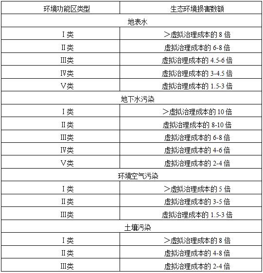

许建惠、许玉仙民事公益诉讼案
（检例第28号）
【关键词】
民事公益诉讼 生态环境修复 虚拟治理成本法
【基本案情】
许建惠，男，
许玉仙，女，
2010年上半年至2014年9月，许建惠、许玉仙在江苏省常州市武进区遥观镇东方村租用他人厂房，在无营业执照、无危险废物经营许可证的情况下，擅自从事废树脂桶和废油桶的清洗业务。洗桶产生的废水通过排污沟排向无防渗漏措施的露天污水池，产生的残渣被堆放在污水池周围。
【诉前程序】
经调查，在常州市民政局登记的三家环保类社会组织，均不符合法律对提起公益诉讼主体要求的相关规定，不能作为原告向常州市中级人民法院提起环境民事公益诉讼。
【诉讼过程】
一、许建惠、许玉仙非法洗桶行为造成了严重的环境污染损害后果。现场留存的大量废桶、残渣，污水池里的废水、污泥，均属于有毒物质，并且仍在对环境造成污染。经检测，污水池下方的地下水、土壤已遭到严重污染。
二、许建惠、许玉仙的行为与环境污染损害后果之间存在因果关系。污水池附近区域的地下水中检测出的污染物与洗桶产生的特征污染物相同，而周边的纺织、塑料和铝制品加工企业等不会产生该系列的特征污染物。
【案件结果】
庭审过程中，公益诉讼人向法院申请由市环保局从常州市环境应急专家库中甄选的环境专
1. 被告许建惠、许玉仙于本判决发生法律效力之日起十五日内，将常州市武进区遥观镇东方村洗桶场地内留存的130只废桶、两个污水池中蓄积的污水及池底污泥以及厂区内堆放的残渣委托有处理资质的单位全部清理处置，消除继续污染环境危险。
2. 被告许建惠、许玉仙于本判决发生法律效力之日起三十日内，委托有土壤处理资质的单位制定土壤修复方案，提交常州市环保局审核通过后，六十日内实施。
3. 被告许建惠、许玉仙赔偿对环境造成的其他损失150万元，该款于判决发生法律效力之日起三十日内支付至常州市环境公益基金专用账户。
一审宣判后，许建惠、许玉仙均未上诉，判决已发生法律效力。
本案的办理得到当地政府、相关行政执法部门以及公益组织的广泛关注和支持，对引导政府完善社会治理，促进环保等行政执法部门加强履职起到了积极作用。本案经20多家媒体直播庭审、跟踪报道，激发了社会公众关注公益诉讼的热情。当地政府将本案作为典型案例，以生效判决文书作为宣教材料，对当地企业开展宣传教育，为进一步推进公益保护工作营造了良好的社会氛围。
【要旨】
1. 侵权人因同一行为已经承担行政责任或者刑事责任的，不影响承担民事侵权责任。
2. 环境污染导致生态环境损害无法通过恢复工程完全恢复的，恢复成本远远大于其收益的或者缺乏生态环境损害恢复评价指标的，可以参考虚拟治理成本法计算修复费用。
3. 专业技术问题，可以引入专家辅助人。专家意见经质证，可以作为认定事实的根据。
【指导意义】
本案是全国人大常委会授权检察机关开展公益诉讼试点工作后全国首例由检察机关提起的民事公益诉讼案件。
1. 围绕侵权构成要件，开展调查核实。虽然污染环境侵权案件因果关系适用举证责任倒置原则，但为保证依法准确监督，检察机关仍应充分开展调查核实，查明案件事实。调查核实主要包括以下方面：（1）侵权人实施了污染环境的行为；（2）侵权人的行为已经损害社会公共利益；（3）侵权人实施的污染环境行为与损害结果之间具有关联性。
2. 准确定位民事侵权责任，提起公益诉讼。《中华人民共和国侵权责任法》第四条规定，侵权人因同一行为应当承担行政责任或者刑事责任的，不影响依法承担侵权责任。污染环境肇事人、食品药品安全领域侵害众多消费者合法权益等损害社会公共利益的侵权人，因该侵权行为受过行政或刑事处罚，不影响检察机关对该侵权人提起民事公益诉讼。罚款或罚金均不属于民事侵权责任范畴，不能抵销损害社会公共利益的侵权损害赔偿金额。
3. 围绕环境污染情况，提出合理诉求。检察机关提起环境民事公益诉讼，应当结合具体案情和相关证据合理确定污染者承担停止侵害、排除妨碍、消除危险、恢复原状、赔礼道歉、赔偿损失等民事责任。检察机关提起环境民事公益诉讼的第一诉求应是停止侵害、排除危险和恢复原状。其中，“恢复原状”应当是在有恢复原状的可能和必要的前提下，要求损害者承担治理污染和修复生态的责任。无法完全恢复或恢复成本远远大于其收益的，可以准许采用替代性修复方式，也可以要求被告承担生态环境修复费用。
4. 围绕生态环境修复实际，确定赔偿费用。生态环境修复费用包括制定、实施修复方案的费用和监测、监管等费用。环境污染所致生态环境损害无法通过恢复工程完全恢复的，恢复成本远大于收益的，缺乏生态环境损害恢复评价指标、生态环境修复费用难以确定的，可以参考环境保护部制定的《环境损害鉴定评估推荐方法》，采用虚拟治理成本法计算修复费用，即在虚拟治理成本基数的基础上，根据受污染区域的环境功能敏感程度与对应的敏感系数相乘予以合理确定。
5. 围绕专业技术问题，引入专家辅助人。环境民事公益诉讼案件，涉及土壤污染、非法排污、因果关系、环境修复等大量的专业技术问题，检察机关可以通过甄选环境专家协助办案，厘清关键证据中的专业性技术问题。专家辅助人出庭就鉴定人作出的鉴定意见或者就因果关系、生态环境修复方式、生态环境修复费用以及生态环境受到损害至恢复原状期间服务功能的损失等专门性问题，作出说明或提出意见，经质证后可以作为认定事实的根据。
【相关规定】
《中华人民共和国侵权责任法》（
第四条 侵权人因同一行为应当承担行政责任或者刑事责任的，不影响依法承担侵权责任。
因同一行为应当承担侵权责任和行政责任、刑事责任，侵权人的财产不足以支付的，先承担侵权责任。
《中华人民共和国固体废物污染环境防治法》（2013年修正）
第十七条 收集、贮存、运输、利用、处置固体废物的单位和个人，必须采取防扬散、防流失、防渗漏或者其他防止污染环境的措施；不得擅自倾倒、堆放、丢弃、遗撒固体废物。
禁止任何单位或者个人向江河、湖泊、运河、渠道、水库及其最高水位线以下的滩地和岸坡等法律、法规规定禁止倾倒、堆放废弃物的地点倾倒、堆放固体废物。
《最高人民法院关于审理环境民事公益诉讼案件适用法律若干问题的解释》（
第十五条 当事人申请通知有专门知识的人出庭，就鉴定人作出的鉴定意见或者就因果关系、生态环境修复方式、生态环境修复费用以及生态环境受到损害至恢复原状期间服务功能的损失等专门性问题提出意见的，人民法院可以准许。
前款规定的专家意见经质证，可以作为认定事实的根据。
第二十条 原告请求恢复原状的，人民法院可以依法判决被告将生态环境修复到损害发生之前的状态和功能。无法完全修复的，可以准许采用替代性修复方式。
人民法院可以在判决被告修复生态环境的同时，确定被告不履行修复义务时应承担的生态环境修复费用；也可以直接判决被告承担生态环境修复费用。
生态环境修复费用包括制定、实施修复方案的费用和监测、监管等费用。
第二十三条 生态环境修复费用难以确定或者确定具体数额所需鉴定费用明显过高的，人民法院可以结合污染环境、破坏生态的范围和程度、生态环境的稀缺性、生态环境恢复的难易程度、防治污染设备的运行成本、被告因侵害行为所获得的利益以及过错程度等因素，并可以参考负有环境保护监督管理职责的部门的意见、专家意见等，予以合理确定。
《人民检察院提起公益诉讼试点工作实施办法》（
第十四条 经过诉前程序[U1] ，法律规定的机关和有关组织没有提起民事公益诉讼，或者没有适格主体提起诉讼，社会公共利益仍处于受侵害状态的，人民检察院可以提起民事公益诉讼。
第十七条 人民检察院提起民事公益诉讼应当提交下列材料:
（一）民事公益诉讼起诉书；
（二）被告的行为已经损害社会公共利益的初步证明材料。
《环境损害鉴定评估推荐方法》（第Ⅱ版）
虚拟治理成本是按照现行的治理技术和水平治理排放到环境中的污染物所需要的支出。虚拟治理成本法适用于环境污染所致生态环境损害无法通过恢复工程完全恢复、恢复成本远远大于其收益或缺乏生态环境损害恢复评价指标的情形。虚拟治理成本法的具体计算方法见《突发环境事件应急处置阶段环境损害评估技术规范》。
《突发环境事件应急处置阶段环境损害评估推荐方法》（即《突发环境事件应急处置阶段环境损害评估技术规范》）
附F 虚拟治理成本法
虚拟治理成本是指工业企业或污水处理厂治理等量的排放到环境中的污染物应该花费的成本，即污染物排放量与单位污染物虚拟治理成本的乘积。单位污染物虚拟治理成本是指突发环境事件发生地的工业企业或污水处理厂单位污染物治理平均成本（含固定资产折旧）。在量化生态环境损害时，可以根据受污染影响区域的环境功能敏感程度分别乘以1.5-10的倍数作为环境损害数额的上下限值，确定原则见附表F-1。利用虚拟治理成本法计算得到的环境损害可以作为生态环境损害赔偿的依据。
附表F-1：利用虚拟治理成本法确定生态环境损害数额的原则

注：本表中所指的环境功能区类型以现状功能区为准。
民 事 判 决 书
（2015）常环公民初字第1号
公益诉讼人江苏省常州市人民检察院，住所地江苏省常州市永宁北路10号。
法定代表人葛志军，江苏省常州市人民检察院检察长。
诉讼代理人吴小红，江苏省常州市人民检察院检察员。
诉讼代理人张扬，江苏省常州市人民检察院助理检察员。
被告许建惠。
被告许玉仙（许建惠之妻）。
两被告共同委托代理人宗龙喜，江苏龙成律师事务所律师。
两被告共同委托代理人蒋顺，江苏龙成律师事务所律师。
公益诉讼人江苏省常州市人民检察院（以下简称公益诉讼人）诉被告许建惠、许玉仙环境公益诉讼纠纷一案，本院于2015年12月22日立案受理后，依法组成合议庭，于
公益诉讼人诉称，常州市天宁区人民检察院在履行职责中发现：2010年上半年至2014年9月，许建惠、许玉仙在常州市武进区遥观镇东方村民委员会东方村租用他人厂房，在无营业执照、无危险废物经营许可证情况下，擅自从事废树脂桶和废油桶清洗业务，违法处置清洗废桶过程中产生的废水、废渣，造成了环境严重污染，两被告行为已经构成污染环境罪被依法追究刑事责任。但现场留存的废桶、残渣与污水池里的污水、污泥尚未清除，污水池里的污水仍在不断渗透，对土壤和地下水造成污染。经相关部门检测认定，现场留存的废桶、残渣均属于《国家危险废物名录》中的危险废物，应依法及时处置，消除对环境的危险；经鉴定机构评估调查，污水池渗漏造成了污水池下方土壤的污染，对被污染的土壤应依法进行修复；两被告长期非法处置和排放至少500吨的废水，对地下水和外环境造成了严重影响，根据《环境污染损害数额计算推荐方法》的确定原则，可采用虚拟治理成本法来计算修复费用。
公益诉讼人认为，被告许建惠、许玉仙实施了污染环境的行为，造成了环境的严重污染，损害了社会公共利益，根据《中华人民共和国环境保护法》第六条、《中华人民共和国民法通则》第一百二十四条、《中华人民共和国侵权责任法》第六十五条的规定，许建惠、许玉仙应当承担环境污染损害修复赔偿责任。因目前常州市不具有提起环境民事公益诉讼的适格主体，社会公共利益仍处于受侵害状态，现根据《中华人民共和国民事诉讼法》第五十五条、《全国人民代表大会常务委员会关于授权最高人民检察院在部分地区开展公益诉讼试点工作的决定》规定，向本院提起诉讼，请求判令被告许建惠、许玉仙赔偿污染环境修复费用356.2万元，请求判令被告消除危险，对于场地内遗留废物应当及时合法处置，并承担本案的鉴定评估费用。诉讼过程中，公益诉讼人将诉讼请求变更为：1、判令两被告依法及时处置场地内遗留的危险废物，消除危险；2、判令两被告依法及时修复被污染的土壤，恢复原状；3、判令两被告依法赔偿场地排污对环境影响的修复费用，以虚拟治理成本30万元为基数，根据该区域环境敏感程度以4.5-6倍计算赔偿数额，该款项支付至常州市环境公益基金专用账户。
被告许建惠、许玉仙辩称，一、本案不属于环境公益诉讼，公益诉讼人就本案也不具有诉讼主体资格，其不能作为公益诉讼人对两被告提起环境公益诉讼。根据最高法院司法解释的规定，环境公益诉讼是指”对已经损害社会公共利益或者具有损害社会公共利益重大风险的污染环境、破坏生态的行为”提起的诉讼。而本案中，两被告承租武进区遥观镇东方村委东方村梅建新的厂房自2010年上半年进行洗树脂桶和废油桶至2014年8月结束，承租的厂房已返还给出租人并由出租人另行出租给他人经营。两被告的行为既没有损害社会公共利益或具有损害社会公共利益重大风险，更未破坏生态。所以，本案不具有环境公益诉讼的条件。退一步，即使属于环境公益诉讼，但已经生效的（2014）常环公民初字第2号常州市环境公益协会诉储卫清等民事公益诉讼一案确认了常州市环境公益协会具有公益诉讼原告资格。所以，江苏省常州市人民检察院在常州具备公益诉讼原告主体的情况下，不能作为公益诉讼人提起环境公益诉讼。二、两被告虽然实施了污染环境的行为，但未造成环境污染的后果。对于东方洗桶厂内两个污水池及周边堆放的残渣、厂区围墙南侧的残渣，污水池下的废泥，加上130只废桶两被告会以积极的态度委托有资质的单位进行处理。两被告系采用水循环方式洗桶，产生的废水仅五十余吨，且从未向厂区外排放过废水，公益诉讼人所指我们排放500吨废水，证据并不充分，两被告不予认可。三、两被告没有造成东方洗桶厂土壤的污染。所有的检测报告均不能证明土壤受到了污染，所以也无需对土壤进行恢复。四、无证据表明东方洗桶厂的地下水污染由被告的行为造成，被告更没有对公共环境造成污染。地下水和公共环境的污染与被告的行为之间不存在因果关系。所以被告不应当承担相关的赔偿责任。五、公益诉讼人提出按照虚拟成本法计算赔偿数额，因两被告造成污染的前提不成立，所以该赔偿计算方法也不能成立。
本院经审理查明，2010年上半年至2014年9月，被告许建惠、许玉仙在常州市武进区遥观镇东方村委东方村租用他人厂房，在无营业执照、无危险废物经营许可证的情况下，擅自从事废树脂桶和废油桶的清洗业务。洗桶产生的废水通过排污沟排向无防渗漏措施的露天污水池，产生的残渣被堆放在污水池周围。
经江苏常环科技有限公司现场采样并委托澳实分析检测（上海）有限公司检测，从现场地下水、污水池内废水以及污水池四周堆放的残渣、污水池底部沉积物中均检出铬、锌等多种重金属及苯酚类、总石油烃等多种有机物。
在本案审理过程中，本院召集公益诉讼人、两被告及委托代理人、本案专家辅助人以及当地政府工作人员及村民代表到受污染地进行现场勘验发现，厂区内尚留存130只未清洗化工桶；两个污水池；污水池周边、厂区内围墙南侧堆放有固体残渣，污水池中蓄积有大量排污废水。
以上事实，双方当事人均无异议，本院予以确认。
本案双方争议焦点为：（一）常州市人民检察院能否提起本案公益诉讼；（二）如何认定两被告污染物及排放量；（三）、两被告污染行为造成环境损害后果的范围是否包括土壤、地下水与周边环境；（四）被告的污染行为与环境损害后果之间有无因果关系；（五）公益诉讼人关于要求被告以虚拟治理成本30万元为基数、根据该区域环境敏感程度以4.5-6倍计算环境修复费用的主张能否成立。
一、关于常州市人民检察院能否就本案提起民事公益诉讼问题
公益诉讼人主张，被告的行为导致了洗桶厂土壤、地下水和周边环境的污染，损害了社会公共利益。本案属于公益诉讼。常州市环境公益协会成立不满五年，不符合《中华人民共和国环境保护法》第五十八条第二项规定的要求，目前不能作为公益诉讼的原告。因常州市目前没有能够提起环境民事公益诉讼的适格原告。所以常州市人民检察院作为公益诉讼人主体适格。
被告主张，常州市环境公益协会作为环境公益诉讼原告的主体资格已经由（2014）常环公民初字第2号民事判决书确认。故常州市人民检察院作为公益诉讼人主体不适格。
本院认为，被告许建惠、许玉仙认可其在未领危险废物许可证的情况下，擅自从事洗桶业务，未经处理排放废水。废水排放不仅会对场地造成污染，而且由于废水的流动、渗透，可能造成土壤、地下水和周边环境的污染，这属于社会公共利益范畴，因此本案属于公益诉讼。《中华人民共和国环境保护法》于
二、关于污染物及排放量问题
公益诉讼人提交了以下证据：
1、南京大学现代分析中心出具的检测报告1份、常州固废与辐射环境管理中心出具的《关于对常州市永大容器包装厂等4家清洗的废包装桶属于危险废物的认定》、《关于遥观镇东方村洗桶厂地块内固废样品含有有毒物质的认定》。证明：经检测认定：废桶内含有的化学物质为危险废物，危废类别为HW13；包装桶为危险废物，危废类别为HW49；现场采集的残渣和污水池底部沉积物样品中含有的铜、铬等重金属及硝基芳烃、苯酚类、甲苯、乙苯、苯乙烯等多种有机物均属有毒物质。
2、常环环境科技有限公司编制的《武进区遥观镇东方村洗桶厂场地环境调查技术报告》。报告认为，除现存在污水池内的废水外，两被告在4年的经营过程中保守评估有500吨废水非法排放，这部分废水对环境造成严重破坏。
3、常州市公安局天宁分局对许玉仙所作的讯问笔录；对两被告洗桶场地的出租人梅建新、两被告雇佣的工人罗忠芬、肖巍等人所作的询问笔录。该笔录证实了洗桶厂每天洗桶至少200只，四年洗桶不少于24万只。
公益诉讼人主张，被告不具备处理废水残渣的资质和能力条件。被告在长达四年的时间里清洗废桶的数量至少24万只，产生和排放的含有有毒物质的废水至少500吨。
被告主张其根本没有对外排放废水，对场地也从来没有排放废水。被告洗桶的废水是充分循环使用的，特地建造了两个污水沉淀池，把清洗产生的废水引入沉淀池，让污水沉淀，污水沉淀后再重复循环使用。所谓500吨废水不知去向是主观推断。
本院认为，被告从事非法洗桶业务四年多，其雇佣的工人罗忠芬、肖巍等人向公安机关陈述了每天洗桶至少200只，四年来洗桶总量至少24万只。该证言与被告许玉仙向公安机关的供述相互印证，本院予以认定。参考有合法洗桶资质单位的环境影响报告书，折算清洗24万只桶产生的废水量为524吨到720吨之间。被告所洗废桶内含有对本二甲酸和间苯二甲酸聚酯，属于危险废物。上述桶内的危险废物经清洗转移至废水内，废水又未经无害化处理就排入露天污水池。洗桶水是否经过沉淀、重量使用，并不影响其非法排放的危险废物总量。被告的排污总量应当确定为24万只废桶内所含有的危险废物，也相当于在水不重复使用的情况下造成并对外排放废水至少有500吨。因此，公益诉讼人关于两被告至少产生500吨废水的主张有充分依据，被告的行为对环境造成了严重污染，被告实施环境污染行为的程度应以上述排污量来计算。
三、关于环境损害后果问题
公益诉讼人提交了以下证据：
1、现场遗留的废桶、残渣、污水池照片共18张，以此证明：两被告非法经营洗桶业务，产生了大量的废水和残渣。废水存放在未采取任何渗漏措施的露天污水池内，残渣随意堆放在污水池周边及厂房外南侧围墙内，厂区内还有大量的化工原料桶随意堆放，现场环境恶劣，污染严重。
3、常环环境科技有限公司编制的《武进区遥观镇东方村洗桶厂场地环境调查技术报告》，以此证明：一是被告侵权行为造成土壤和地下水污染损害。经评估，土壤污染范围为100平方米，污染土方量为800立方米；地下水污染面积约300平方米，污染地下水量为1560立方米。二是500吨废水非法排放对周边环境造成损害。
公益诉讼人主张，常环环境科技有限公司出具的环境调查技术报告是环境专业单位根据我国现有法律法规，做的专业评估，该报告具有规范性合法性。关于被告洗桶造成的污染损害后果，包括三大部分。第一，地下水污染。评估报告中明确，经检测污水池附近的污泥中，洗桶行业的特征污染物是苯系物，与污水池的废水、污泥中的污染物总体相一致。证明地下水受到严重污染，地下水的污染由污水池渗漏所致。第二，土壤污染。土壤虽然经检测均未超标，但是这几个土壤样品均是在污水池以外的部位采样。由于污染物集中在污水池下方，污水池内含有大量污水废泥，为避免扩大污染，没有条件对污水池底部的土壤直接采样检测。但本案检测出来的污染物是在地下
被告质证意见认为，该报告中对土壤污染范围
对于上述争议，专家辅助人意见是：现有土壤样品取样自固化水泥地面下方，因场地表层固化，污染物难以向下渗透，这些样品的合格并不能代表整个土壤环境未受影响。因为污染最严重的污水池下方土壤因实际情况，不符合取样条件，因此未取样。而土壤污染的来源，除了污染物表层堆放向下渗透外，地下水的毛细现象和渗透扩散也是一大因素，因为地下水与周边土壤直接接触，并没有隔离层，根据吸附原理，受到污染的地下水会将各种污染物扩散到周边土壤中，使土壤同样受到污染。因此，评估报告认定污水池下方的土壤遭到污染是科学的。
本院认为，两被告实施的污染行为除造成双方当事人均确认的东方村洗桶厂内两个污水池中蓄积的污水及池底污泥、以及厂区内堆放的残渣污染外，还造成了地下水污染、污水池下方土壤及周边环境的污染。根据现场地下水的取样检测结果，地下水中超标因子包括重金属、总石油烃、氯代烷烃、苯系物等；以上化学物质均属污染物。以上污染物与洗桶行业的特征污染物相吻合，与污水池的废水、污泥中的污染物总体相一致。污染物在地下水中的含量远远超过了《地下水质量标准》的三类标准值。因此可以判定地下水确实造成了严重污染。
关于污水池下方土壤是否污染。常环环境科技有限公司的调查报告得出了该土壤被污染的结论，专家辅助人的专业意见论证了常环公司报告的科学性。虽因污水池下方土壤因实际情况，不符合取样条件，未作检测。但地下水的毛细现象和渗透扩散是一个普遍客观存在的自然现象，从地下水、污水池的污染数据，可以得出土壤被污染的结论。
关于周边环境是否造成污染。两被告主张公益诉讼人不能证明被告的行为造成了周边环境的影响。但由于两被告在长达四年多的排污过程中，至少有24万只桶内的残留化学物都留存在污水池中。因被告从未采取有效防范处理措施，无法做到化学物平衡，在四年多各种气象及自然条件下，必然会导致污染物的外泄。而且，根据现场勘验的情况，洗桶厂内场地和污水池中残留的危险废物数量，已经远小于被告所排放污染物的保守数量。在被告未对危险废物进行合法处置的情况下，其减少的危险废物不可能自然消失，也不可能完全自然降解，必然发生了流出洗桶场地的事实。据此，本院认定被告的行为对周边环境造成了污染。
四、关于污染行为与损害结果之间的因果关系问题
公益诉讼人主张，根据《东方村洗桶厂地块场地环境调查阶段实际采样点位图》、澳实分析检测（上海）有限公司出具的检测报告、江苏常环环境科技有限公司制作的《地块内土壤中检出的污染物浓度范围》表、《地块内地下水中检出的污染物浓度范围》表、《东方村洗桶厂地块2号污水池检出污染物浓度》表，污水池附近地下水污染数据，以及地下水中污染物种类与残渣、污水池底部沉积物、污水池里的废水检出的污染物种类相对应，可以判定污水池底部土壤受到污染，且土壤污染是由污水池渗漏造成的，被告非法贮存废水的行为与土壤的污染之间具有因果关系。
被告主张，地下水检测污染物和污水池内检测污染物并不相同，污水池和地下水中污染物相同的指标只有21种，大量指标并不相同，被告的行为和污染没有因果关系。本案不存在举证质证倒置的问题。根据《最高人民法院关于环境民事公益诉讼案件适用法律若干问题的解释》规定，公益诉讼人或者公益组织作为原告提起公益诉讼，必须向法庭提交证据证明被告实施了污染环境的行为，并且要证明这个行为造成的后果以及行为与后果存在因果关系，公益诉讼人负有举证责任。
专家辅助人的意见是：根据现场地下水取样检测结果，超标因子包括重金属、总石油烃、氯代烷烃、苯系物等，根据现场勘查，周边企业主要为机械厂(一家铝制品厂和一家交通设备配件厂)等非化工类企业。而洗桶厂所清洗的包装桶主要为各种树脂桶、油料桶等，化工特征明显，与污染物超标因子相符合。根据现场地下水、固废和污水池中的取样检测结果，地下水中超标因子包括重金属、总石油烃、氯代烷烃、苯系物等；固废中检出重金属、酮酚酸酯类、总石油烃、卤代脂肪烃(氯代烷烃属于卤代脂肪烃)、卤代芳香烃、单环多环芳香烃(苯系物属于单环芳香烃)等物质；污水池中检出重金属、酮酚酸酯类、总石油烃、卤代脂肪烃、单环多环芳香烃等物质。在地下水检测中超标的化学物质都能在固废取样和污水池取样中找到对应物，根据这样的对比，可以认为地下水中的污染物和固废、污水中的污染物属于同一来源，即来源于旧桶的清洗。
本院认为，被告主张洗桶厂周边存在很多企业，它们的排污也会导致地下水的污染。但周边的非化工类企业产生的污染物不可能在总石油烃等化工特征明显的因子上全系列超标。洗桶厂所清洗的包装桶主要包括树脂桶、油料桶，化工特征明显。虽然现场固废污水池内所检出的污染物与地下水污染物不完全对应,但地下水污染物和洗桶行为的特征污染物能够完全对应。虽不能排除其他企业也污染了地下水，但足以认定被告的行为造成地下水污染。公益诉讼人已经提交证据材料证明本案被告排放的污染物与损害之间具有关联性。根据《中华人民共和国侵权责任法》第六十六条之规定，因污染环境发生纠纷，污染者应当就其行为与结果之间不存在因果关系承担举证责任。现被告不能举证证明地下水污染全部系其他企业排污行为所致。在地下水污染物和洗桶行为的特征污染物能够完全对应的情况下，本院认定公益诉讼人关于两被告的行为与环境损害后果之间具有因果关系的主张具有事实法律依据。
五、关于环境修复费用计算方法问题
公益诉讼人认为，根据《武进区遥观镇东方村洗桶厂场地环境调查技术报告》，场地排污对外环境的影响可采用虚拟治理成本法来计算，根据受污染影响区域的环境功能敏感程度乘以相应的倍数来确定。根据《项目地块及周边关系示意图》，该区域水体敏感受体为宋剑湖，水体为Ⅲ类水体，污染修复费用为虚拟治理成本的4.5-6倍。该计算方法符合环境保护部制定的《环境损害鉴定评估推荐方法》。虚拟成本治理法适用于环境污染所致生态环境损害无法通过恢复工程完全恢复、恢复成本远大于其收益或生态环境损害恢复评价指标的情形。本案被告长期非法排污对地下水、周边环境造成的影响符合虚拟成本治理法适用条件。
被告的质证意见认为，不能以宋剑湖作为敏感目标，也不能以宋剑湖水质确定虚拟治理成本。对于没有证据证明土壤存在污染，也就谈不上土壤修复费用问题。
本院认为，由于本案所涉地下水及洗桶厂周边环境，已难以通过工程予以恢复，其恢复成本远大于其收益并缺乏环境损害评价指标体系。根据环保部制定的《环境损害鉴定评估推荐办法》第二版，恢复成本远大于其收益或缺乏生态环境损害评价指标的情形，可适用虚拟成本治理法计算修复费用。本案中两被告长期排污对地下水和周边环境造成的污染，符合虚拟治理成本治理法的适用的情形。根据常环环境科技有限公司《环境调查技术报告》，一般洗桶废水处置费用为600元每吨。本案两被告洗桶产生废水500吨，洗桶废水虚拟治理成本为30万元。根据最高人民法院《关于审理环境民事公益诉讼案件适用法律若干问题的解释》第二十三条的规定，合议庭考虑到本案污染者的过错程度、污染物性质、周边环境敏感度等因素，酌情确定本案以虚拟治理成本5倍计算赔偿数额为150万元。
综上，被告许建惠、许玉仙实施了污染环境的行为，造成了环境污染的后果，应当依法承担相应的民事责任。公益诉讼人要求被告消除危险、恢复原状、赔偿损失的诉讼请求正当，本院予以支持。依照《中华人民共和国固体废物污染环境防冶法》第十七条，《中华人民共和国环境保护法》第六条、第五十八条，《中华人民共和国侵权责任法》第四条、第十五条、第六十五条、第六十六条，《中华人民共和国民事诉讼法》第五十五条、第一百四十二条，《最高人民法院关于审理环境民事公益诉讼案件适用法律若干问题的解释》第十五条、第十八条、第十九条、第二十三条的规定，判决如下：
一、被告许建惠、许玉仙于本判决发生法律效力之日起十五内将常州市武进区遥观镇东方村委东方村洗桶场地内遗留的130只废桶、两个污水池中蓄积的污水及池底污泥、以及厂区内堆放的残渣委托有处理资质的单位全部清理处置，消除环境继续污染危险。
二、被告许建惠、许玉仙于本判决发生法律效力之日起三十日内，委托有土壤处理资质的单位制订土壤修复方案，提交常州市环境保护局审核通过后，六十日内实施。
三、被告许建惠、许玉仙赔偿对其它环境造成的损失150万元，该款于本判决发生法律效力之日起三十日内支付至常州市环境公益基金专用帐户。
案件受理费16950元，由两被告共同负担。
如不服本判决，可在判决书送达之日起十五日内，向本院递交上诉状并按对方当事人的人数提交上诉状副本，上诉于江苏省高级人民法院。
人民审判员 李艳萍
人民陪审员 朱 依
书 记 员 邹 静
[U1]督促法律规定的机关起诉（督促起诉意见书）；建议辖区内符合法律规定条件的有关组织起诉（检察建议书）。